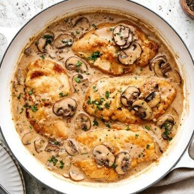

Italian Pork Marsala Recipe

Description
This Pork Marsala, with herbs, garlic, and wine, is easy to make!
Prep Time: 10 mins
Cook Time: 25 mins
Total Time: 35 mins
Servings: 4
Nutrition Facts [per serving]
Calories: 455
Fat: 28g
Carbs: 18g
Protein: 18g
Ingredients
- ⅓ cup all-purpose flour
- ¾ teaspoon garlic powder
- ½ teaspoon dried oregano
- ¼ teaspoon garlic salt
- ¼ teaspon salt
- 1 pound bonless pork loin chops, pounded thin
- ¼ cup olive oil
- 3 tablespoons butter
- 2 cups sliced fresh mushrooms
- 1 teaspoon minced garlic
- 1 cup Marsala wine, or more as needed
Steps
- Mix together flour, garlic powder, oregano, garlic salt, and salt in a medium bowl. Add pork chops and toss until well coated.
- Heat olive oil and butter in a large skillet over medium heat. Cook pork chops in hot oil-butter mixture, turning occasionally,
until brown on both sides. Add mushrooms and garlic; cook and stir until mushrooms begin to soften and garlic is fragrant, about 1 minute.
- Pour in wine, scraping the skillet to loosen any brown bits of food on the bottom of the skillet. Cover and simmer over medium heat until pork is tender
and sauce is thickened, about 15 minutes. An instant-read thermometer inserted into the center of pork should read at least 145 degrees F (63 degrees C).
If sauce is too thick, adjust by stirring in more wine, a little at a time.
Home